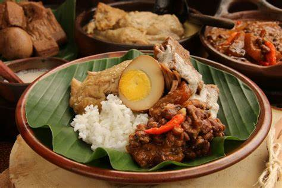
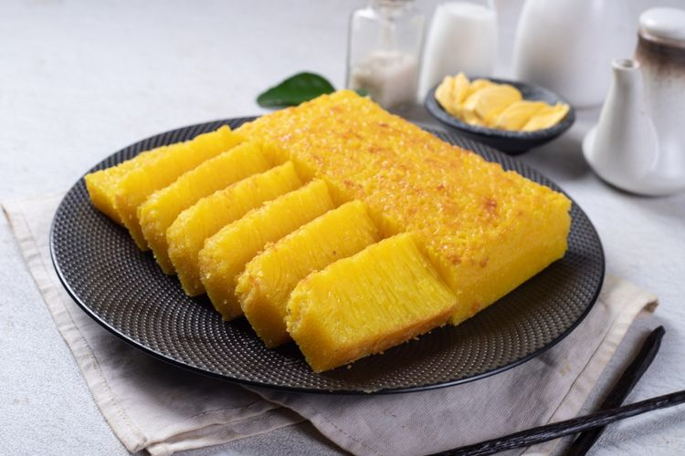

Gudeg: Manisnya Kuliner Yogyakarta
Gudeg merupakan masakan khas Yogyakarta yang memberikan kejutan dengan cita rasa uniknya.Terbuat dari nangka muda yang dimasak dengan santan, gula merah, dan bumbu khas, Gudeg menjadi sajian yang mengejutkan dengan citarasanya yang lezat dan manis. Biasanya disajikan dengan nasi, opor ayam, telur, tahu, tempe dan sambal goreng krecek. Sebagai salah satu masakan favorit masyarakat Indonesia, Gudeg menjadi pilihan tepat bagi pecinta yang manis dan gurih.
Bika Ambon: Kelezatan Tradisional Sumatera Utara
Bika Ambon, kue khas Sumatera Utara, merupakan salah satu kelezatan yang sayang untuk dilewatkan. Dengan bentuknya yang bulat dan kenyal, tekstur lembut dan kenyal serta rasa manis dan nikmat, Bika Ambon memikat hati .Terbuat dari bahan-bahan seperti tepung terigu, telur, santan, ragi, gula pasir dan vanila, Bika Ambon juga hadir dalam berbagai varian rasa seperti durian, keju, daun pandan dan coklat. Cocok dijadikan oleh-oleh khas Medan
Rendang: Kelezatan Terkenal Sumatera Barat
Rendang, makanan khas Sumatera Barat, merupakan makanan lezat yang sudah populer secara mendunia. Terbuat dari daging sapi yang dimasak dengan berbagai macam bumbu, Rendang menghadirkan cita rasa yang sangat lezat dan kaya.. Dengan tekstur yang lembut dan ciri khas warna coklat tua, Rendang diakui oleh CNN International sebagai salah satu hidangan terlezat di dunia.. Biasanya disajikan dengan nasi atau ketupat..

Pempek: Sensasi Palembang yang Pedas dan Gurih
Pempek makanan khas palembang menjadi hidangan yang menarik perhatian karena rasanya yang pedas dan asin.. Terbuat dari campuran ikan kembung yang digoreng atau dikukus dan tepung sagu, Pempek hadir dalam berbagai bentuk seperti kapal selam, lenjer, frisee, adaan, kulit dan putik. Disajikan dengan saus cuka yang pedas dan manis serta ditaburi ebi goreng dan bawang goreng, Pempek disebut juga empek-empek atau mpek-mpek.

Sate: Variasi Tak Terbatas
Sate yang merupakan makanan khas Indonesia ini memiliki variasi yang tak terhitung jumlahnya. Terbuat dari 4.potong daging ayam, sapi, kambing atau daging lainnya yang ditusuk pada bambu atau batang besi dan dipanggang di atas arang. Sate sering disajikan dengan saus kacang atau kecap manis, bersama dengan sayuran segar seperti mentimun dan bawang merah.. Setiap daerah mempunyai variasi sate khasnya masing-masing, seperti sate Madura, sate Padang, sate Lilit, dan sate Kambing. Populer di Indonesia dan negara tetangga seperti Malaysia dan Singapura

Soto Betawi: Lezatnya Jakarta dalam Semangkuk Soto
Soto Betawi, sajian khas Betawi, Jakarta, memperkenalkan Anda pada nikmatnya cita rasa ibu kota Indonesia.. Terbuat dari daging sapi yang dimasak dengan bumbu seperti serai, lengkuas, jahe dan santan.. Soto Betawi disajikan dengan kuah kental, daging sapi, kentang, tomat, dan kentang goreng.. Dengan cita rasa khasnya yang lezat, masakan soto ini sering dinikmati dengan nasi atau ketupat. Ini adalah sepotong lezat budaya kuliner Indonesia.